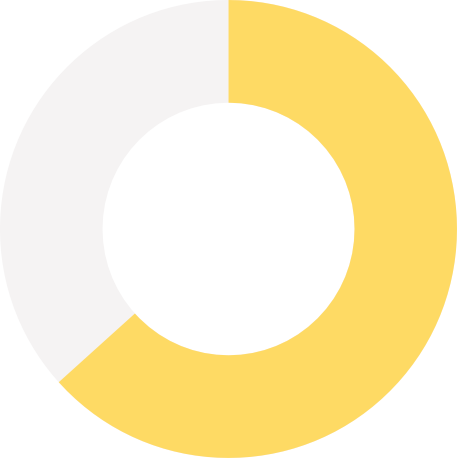
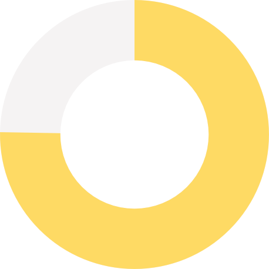
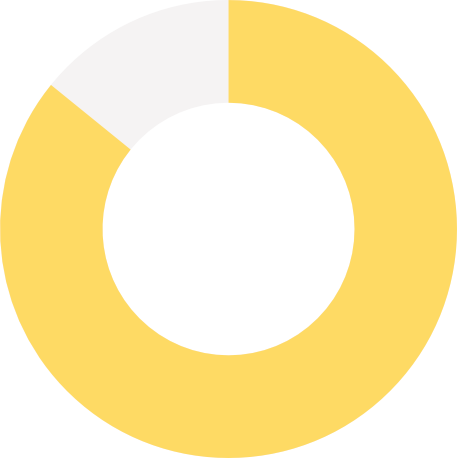

BERTRAND HONNER
02/03/1991 British & French 163 Rue Washington, 1050 Brussels, Belgium
+32 474 53 27 72 honnerbertrand@gmail.com
WORK EXPERIENCE
Project Manager 01/2016-12/2016
Korea Research & Innovation Centre (KIC) – Europe
- In charge of European promotion of K-Startup Grand Challenge, Korea's largest accelerator programme for global start-ups
- Budget planning & management (+300K euros)
- Content creation (website, application page, ppt, social media, tech news articles) & development of promotional tools
- Building partnerships & expanding network in Europe
- Public speaking in major tech startup events
- Scouting, selection and audition of startups for the programme (planning and execution of pitch days)
- Follow-up and communication with start-ups/partners
- Data analysis & presentation (scouting)
Business Development Trainee 09/2014-12/2015
Korea Research and Innovation Centre (KIC) – Europe
- Expansion of European network (innovation centres, start-up accelerators, R&D institutes, …)
- Planned & successfully conducted 2 major events: Korea Innovation Day & Korea Tech Startup Day
- Policy & innovation research (thesis)
- Data analysis & interpretation
ACHIEVEMENTS
Project Manager - KIC-Europe 02/2016-12/2016
- Active on-ground promotion in 12 European cities (9 countries) in less than 3 months
- Planned and successfully conducted 2 offline & 5 online pitch days in 2 countries & less than 4 weeks
- +900 start-up applications received, out of which 29 selected (sent to Korea)
- +200 people met in person and added to KIC-Europe’s professional network
- 2 interns under my supervision
- Co-wrote and published “Europe’s Tech Big Four: KIC-Europe’s Guide to the Continent’s Top Startup Hubs”, specifically designed for stakeholders of the Korean startup ecosystem and distributed among Korean government entities
Team Leader - Housing Project India 07/2012-08/2012
- Built a school in a small village in Tamil Nadu
- Led a team of 9 volunteers
EDUCATION
Master of International Business 2013-2015
and Management (cum laude)
ICHEC, Brussels, Belgium
- Minor in European Perspectives
- Master’s thesis: “Forward Together: The Efficiency of EU-Korea Research, Development & Innovation (RD&I) Cooperation”
International Exchange Program 2012-2013
(Erasmus)
Universidad Europea de Madrid, Madrid, Spain
Bachelor of Business Administration 2010-2013
(cum laude)
ICHEC, Brussels, Belgium
SKILLS
Computer / Web / Graphic skills
|  |  | ||
| HTML5 & CSS3 | JS & jQuery | Git & GitHub | Affinity Designer & Photo |
|  |  | ||
| Wordpress | Web 2.0 tools & Social Media | MS Office | iMovie & DaVinci |
Language skills
| English (MT) | |
| French (MT) | |
| Spanish (B2+) | |
| German (B1) |  |
| Korean (A2+) |
HOBBIES/INTERESTS
| Jazz Musician | Web Design, Development & UI/UX | ||
| Photography/ Videography | Social Business & Human Rights | ||
| Traveling | Startup Project (formation/ ideation) |